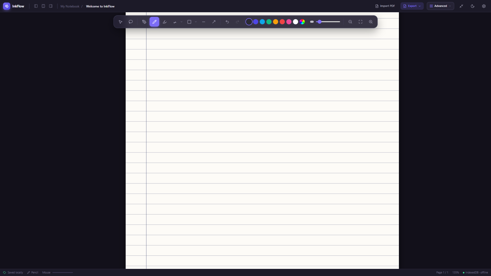

Real pen, digital paper.
InkFlow is an offline handwriting, drawing and note-taking app built for graphics tablets and styluses. Pressure-sensitive ink, beautiful page templates, PDF annotation, full notebooks — all stored locally, all yours.

Everything, kept simple
Pressure-sensitive writing
Pen, pencil, highlighter with multiply blend, erasers that trim strokes or delete them whole, shapes & arrows — smoothed with quadratic curves, coalesced pointer events and tilt support.
Real notebooks
Notebooks, folders, tags, favorites, duplicate, archive and search. Multiple pages per note with page rail navigation and thumbnails.
Professional page templates
Blank, ruled, grid, dotted, Cornell and Planner — with adjustable spacing and background color. Or annotate existing PDFs without touching the original.
Crash-safe autosave
Every stroke is gzip-compressed into a single atomic payload per page. A write-ahead journal replays interrupted saves on next launch — your notes never vanish.
Your ink, everywhere
Export any page or whole note as PNG, SVG (vector) or PDF. Annotate a PDF? Export a new PDF with the ink baked in as vector paths — the original is untouched.
Three ways to see InkFlow
Switch between Simple, Advanced or Custom toolbar layouts from the top bar. Simple = pen + eraser + colors, Perfect for kids. Pick exactly what each mode shows.
Try InkFlow
Download the portable build — one file, no install, works offline forever.
Download InkFlow-Portable.zipHow to install the portable build
- Download and unzip
InkFlow-Portable.zip. -
Open
InkFlow.htmlin Microsoft Edge or Google Chrome. - For an app-like window: browser menu → Apps / Install InkFlow…
-
For stylus pressure: open via
edge --app=file:///path/to/InkFlow.htmlor Install from the menu — then every stroke remembers how hard you pressed.